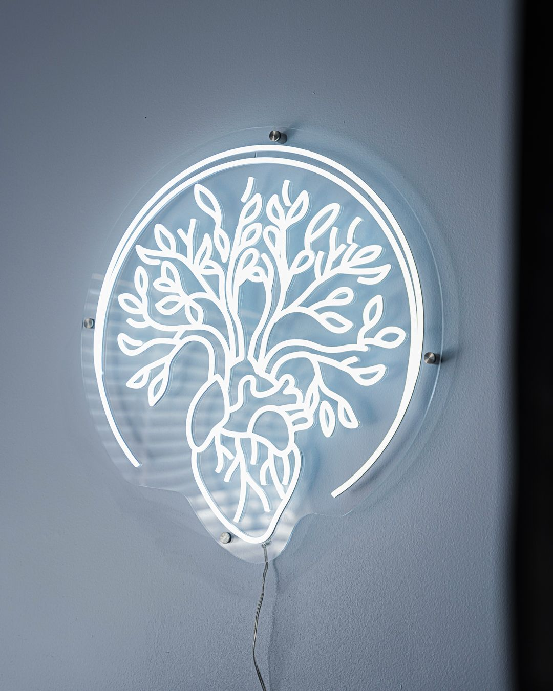
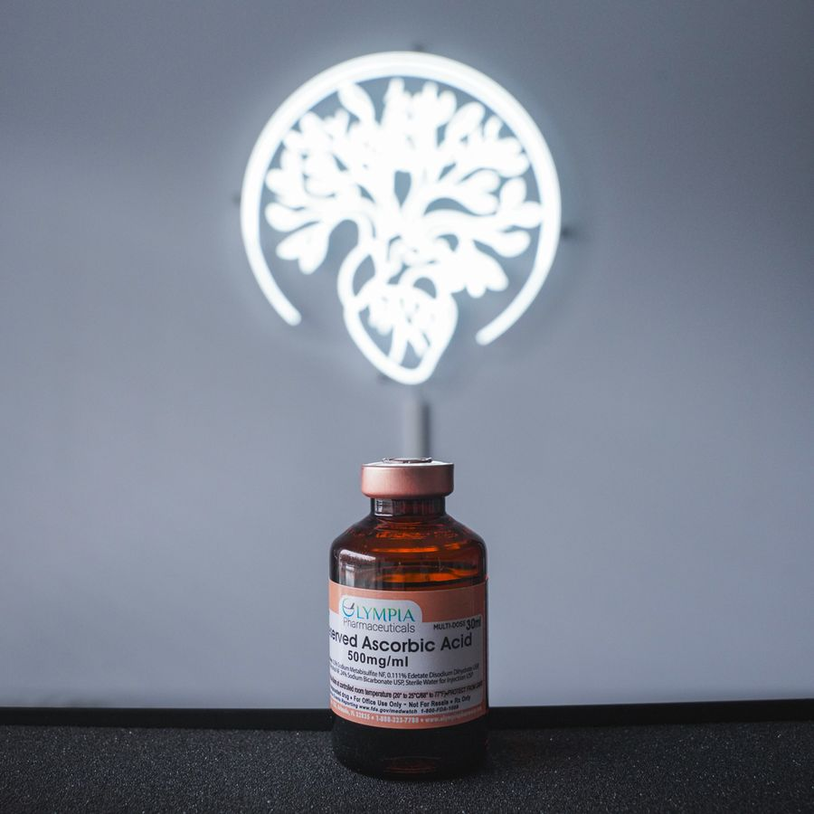

What does bloodwork actually show?
A plain-English tour of the markers on a full-body panel and what they tell you about energy, hormones, and recovery.
Read more →
Resources
Plain-English guides on labs, IVs, hormones, recovery, and medical weight loss from the Asylum team.
Resources
Plain-English guides on labs, IVs, hormones, recovery, and weight loss from the Asylum team. New articles added regularly.
A plain-English tour of the markers on a full-body panel and what they tell you about energy, hormones, and recovery.
Read more →
What NAD+ is, why levels decline, and how infusions are used for energy, focus, and recovery.
Read more →
How hormone replacement works, who it helps, and why testing comes first.
Read more →
The science behind hydration drips and what an IV can and cannot do the morning after.
Read more →
When to use heat, when to use cold, and how to stack them for the best results.
Read more →
What the medications do, who they are for, and why a supervised, lab-based approach matters.
Read more →Reach out and our team will point you in the right direction.